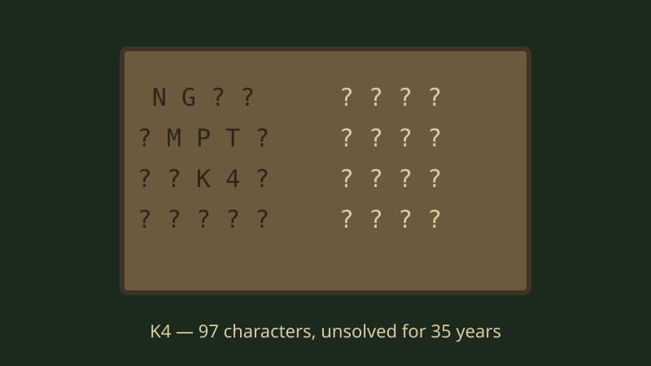

October 02, 2026
Kryptos K4: The CIA Courtyard Cipher Nobody Has Cracked in 35 Years

Illustration by The Discovery Wire
There's a sculpture sitting in the CIA's courtyard in Langley, Virginia, that has been taunting the world's best codebreakers for 35 years.
It's called Kryptos. Artist Jim Sanborn built it in 1990 with four encrypted messages carved into rippling copper. Three of them were cracked — the first by CIA analyst David Stein, announced publicly in 1999. The fourth — 97 characters known as K4 — is still unsolved. The NSA has tried. The CIA has tried. Thousands of amateurs have tried. It has not budged.
The sculptor has dropped a few hints over the years, including in 2020, and they only made it more tantalizing. K4 is arguably the most famous unsolved cipher on Earth, and it's hiding in plain sight at the headquarters of American intelligence.
To be clear about our ground rules: we're asking the question, not claiming the answer. Anyone who tells you they've solved K4 should be met with the same skepticism the cipher itself has earned over three and a half decades.
Here's our question: do you think K4 is still uncracked because it's genuinely that hard — or because the answer is embarrassingly simple and everyone's overthinking it?
Source: The Kryptos story as documented by the CIA and major outlets
← Back to latest stories